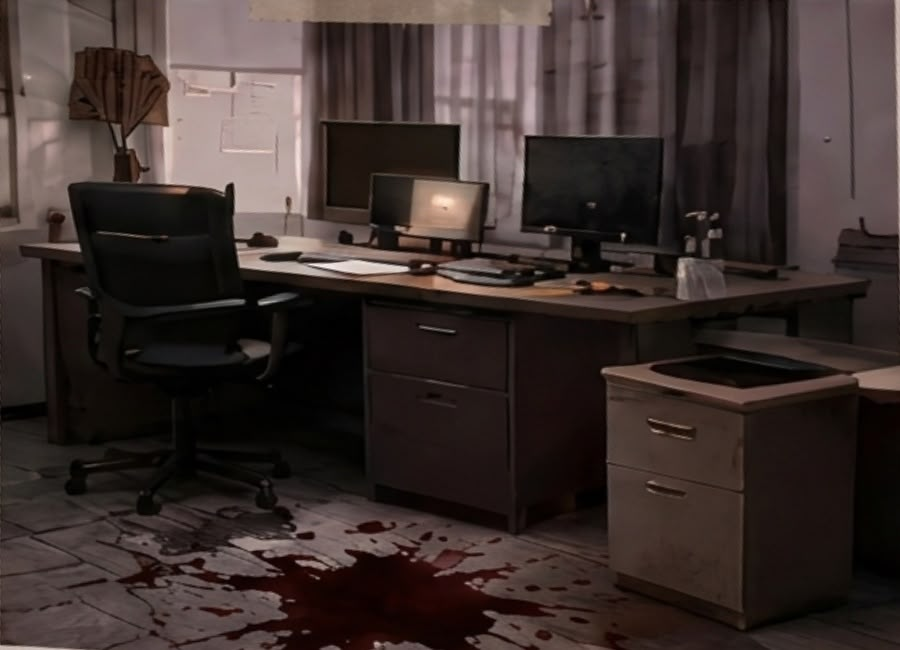

The Case
On Tuesday evening, Ahmed, an administrative employee, was found murdered in his office at 9:30 PM
after a colleague reported him unresponsive.
The initial examination revealed that the victim had suffered a severe blow to the head, resulting in his death.
A broken coffee cup and a threatening note were found near him.
The office window was open, although the door was locked.
Security cameras revealed that three people entered the building before the crime:
Khaled: a colleague of the victim, with whom he had a financial dispute the day before the incident.
Sarah: the office secretary, who was the last person seen with the victim.
Majed: the security officer, who had access to all offices.
During the crime scene investigation, fingerprints were found on the window, and shoe prints were found near the desk,
in addition to the coffee cup and the threatening note.
The relevant authorities have begun investigating the incident, and it is up to the investigators to identify the killer and determine the motive behind the crime, based on the available evidence and clues.... Who is the killer?
